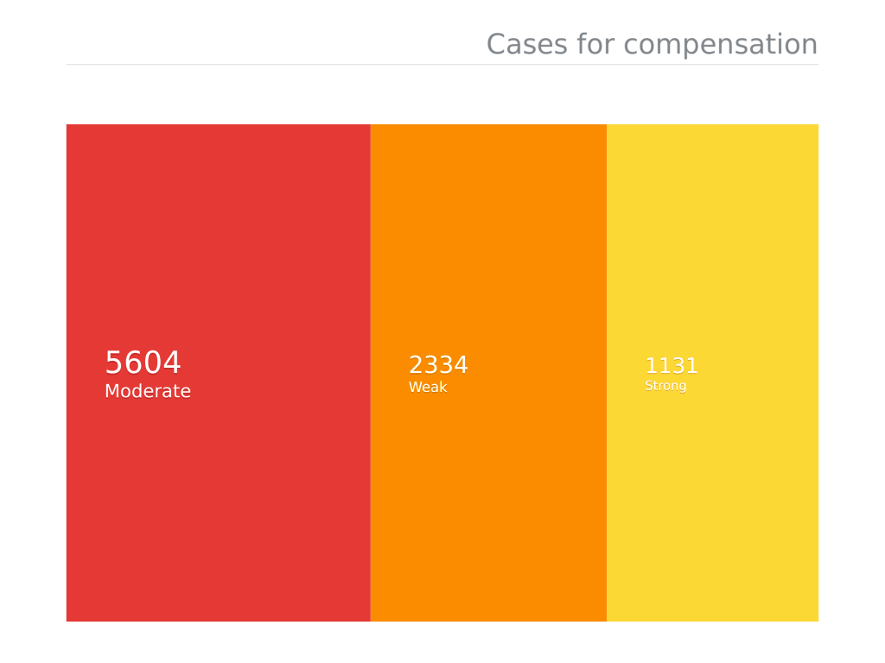

It took a century of commissions, investigations, litigations, acts and reports for the mining industry to finally agree to the compensation of gold miners affected by chronic lung diseases silicosis and tuberculosis. But the dust is far from having settled. The mineworker's claims now need to be verified and their families found.
This is a story about those people and the technology that is used to build South Africa's biggest class action lawsuit and ultimately compensate those affected.
Building South Africa’s biggest class action lawsuit comes with a set of unique challenges. In 2012, Richard Spoor Inc. requested the class certification of more than 15,000 prospective class members at the South Gauteng High Court. After years of proceedings, the court handed down its judgement in 2016. Among one of the rulings were the need to examine individual cases of each miner. This was unprecedented.
Legal representatives of the case applicants Richard Spoor Inc., Abrahams Kiewitz Attorneys and the Legal Resources Centre now needed to determine whether each represented mineworker has in fact been affected, various documents were needed such as their identity documents, medical records and employment history.
The legal team had to build a database to help locate, verify and ultimately compensate the miners -- many of who live in rural parts of neighbouring countries and worked in the mines decades ago. Others have already passed away.
“We needed to find clients for the class action,” explains George Khan from Richard Spoor Inc. By collecting workers’ data the team managed to build a wealth of knowledge of over 50,000 potential claimants which is still growing larger today. Sourcing this information, however, was not their biggest concern. The team still had to analyse this information.
Khan says that it’s a common tactic in the legal industry for corporate attorneys to overwhelm legal firms who are building a case against them with information. These days, however, firms can accommodate physical, unstructured information.
“It’s no longer an effective strategy to dump tons of boxes of documentation on us with the hope that we’re going away. That’s probably the last thing they want to do now,” says Khan.
Ken Gliddon who assisted with building the database says he receives as much as 25 boxes of workers’ records every day. Each box contains copies of around 70 former mineworkers documentation. These include identity documents, medical records, employment history and other unstructured information about the potential claimants.
Gliddon and his team at Spotonline is the technical partner of the legal firms who represented the miners.
The team receives physical documents of those represented in the class action sourced over the years from numerous mining companies, forums and associations. These documents needed to be digitised, validated and analysed. Hundreds of thousands of handwritten doctor’s notes, service history, identification documents were digitised.
Khan says that it would’ve cost us a small fortune to employee an army of paralegals who would’ve taken years to produce the same results manually. The technology enables legal firms who normally wouldn't be able to afford or have the capacity to process vast amounts of unstructured data to now take on big corporations.
Now that the team has all documents stored securely online, they had to be cleaned and analysed. “Apart from digitising the documents, a large part of the process had to do with matching, de-duplication and verification of the records," he says.
He explains that in some cases even after a miner have registered and passed on years later, his spouse could then have registered again. In this instance, the model flags cases that appear as lacking evidence or qualification for the class action and compensation. “By having machines that can do that on mass, it’s very easy to quickly work out who can and who can’t qualify just based on service.”
In terms of classification, the model then determines the amount of supporting evidence each individual has to support their claim. “The more data the model gets the smarter it gets,” he says. These are then categorised by weak, moderate and strong.
They’ve trained the model to the point where it can start to differentiate between different doctors and specialists in terms of the pattern of diagnosis. By doing this, the team can isolate how different doctors read different things. “So we can go to that doctor and say to them: ‘You always pick out TB where nobody else can see TB. What is it that you’re looking for that nobody else can bloody see?’.”
Using the database, the team is able to find hotspots of clients in certain areas. This is essential in tracking down more potential claimants who could otherwise be excluded from the litigation and compensatory process.
“This is critical as far as the compensatory process goes. The trustees are going to want to know where they need to go look for these people to find them in order to make sure whoever is eligible to get money gets paid their money,” says Khan. “It also helps us understand where other potential claimants are.”